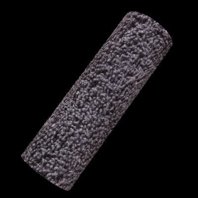
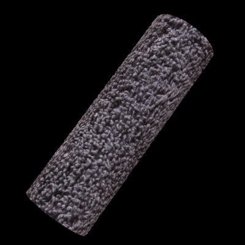

Image as a height map and texture¶
 

{kind=link}
Use an image as a height map, that is, take the image values (average RGB at each pixel) and use those to determine the surface structure. Use the same image for both a plane and a cylinder:
m = objMakeCustom('plane','towel.jpg',.025,'fabric_plane.obj');
m = objMakeCustom('cylinder','towel.jpg',.025,'fabric_cylinder.obj');
The 0.025 is the maximum amplitude of the modulation.
Now the same image can be used as a texture to give the model the
original color. Note that this is not realistic: the original color
of the fabric is actually very uniform but in the image there is a lot
of variation due to shadows (that’s we used the image as a height
map). But for the sake of demonstrating texture mapping, use the same
image. First, the material properties can be defined in a material
library file for applications that understand the .obj and
.mtl formats. In this case, add a reference to the material
library when creating the models:
m = objMakeCustom('plane',
'towel.jpg',.025,
'material',{'material.mtl','fabric'},
'fabric_plane.obj');
m = objMakeCustom('cylinder',
'towel.jpg',
.025,'material',
{'material.mtl','fabric'},
'fabric_cylinder.obj');
And then save the following in the file material.mtl:
newmtl fabric
Ka 0.500 0.500 0.500
Kd 0.500 0.500 0.500
Ks 0.500 0.500 0.500
d 1.0
illum 1
map_Ka towel.jpg # ambient texture map
map_Kd towel.jpg # diffuse texture map
map_Ks towel.jpg # specular texture map
Now, when opening the .obj files in a material-aware application,
the object should have the correct texture.
The following XML-file renders the textured object in Mitsuba:
<scene version="0.5.0">
<integrator type="path">
<boolean name="hideEmitters" value="true"/>
</integrator>
<sensor type="perspective">
<transform name="toWorld">
<lookAt origin="0,0,2.2" target="0, 0, 0" up="0, 1, 0"/>
</transform>
<float name="farClip" value="30"/>
<sampler type="ldsampler">
<integer name="sampleCount" value="100"/>
</sampler>
<film type="hdrfilm">
<integer name="width" value="512"/>
<integer name="height" value="512"/>
<rfilter type="gaussian"/>
</film>
</sensor>
<texture type="bitmap" id="towel">
<string name="filename" value="towel.jpg"/>
</texture>
<bsdf type="diffuse" id="mat_fabric">
<ref name="reflectance" id="towel"/>
</bsdf>
<shape type="obj">
<string name="filename" value="fabric_plane.obj"/>
<ref id="mat_fabric"/>
<transform name="toWorld">
<rotate x="1" angle="-40" />
<rotate y="1" angle="-20" />
</transform>
</shape>
<emitter type="sunsky">
<float name="scale" value="7"/>
<vector name="sunDirection" x="1" y="1" z="1"/>
</emitter>
</scene>
Please note that this is just an example. There’s no guarantee these are in any way reasonable, or sensible, modeling or rendering parameters for a particular application.